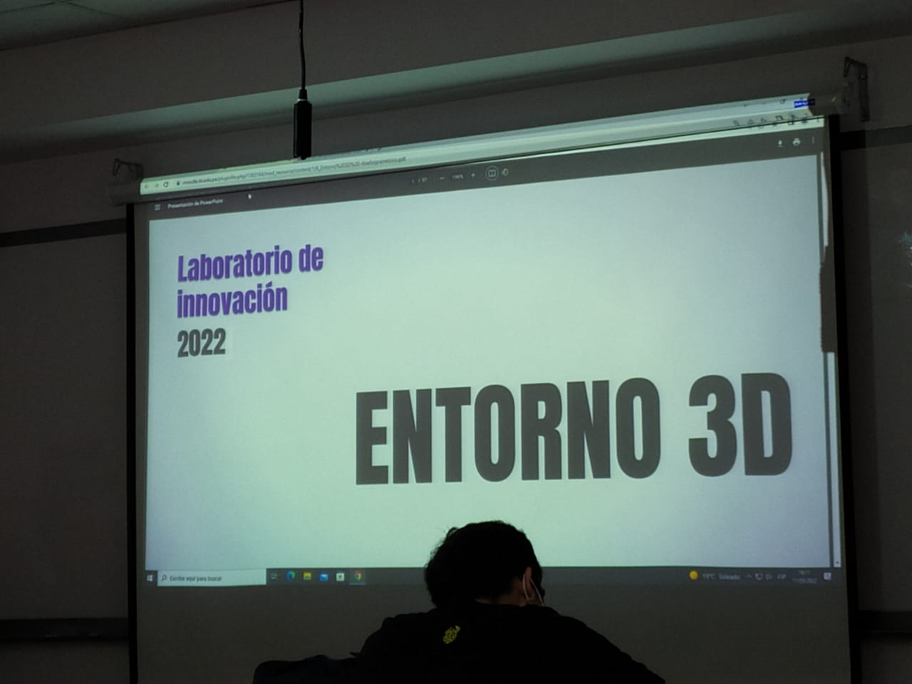
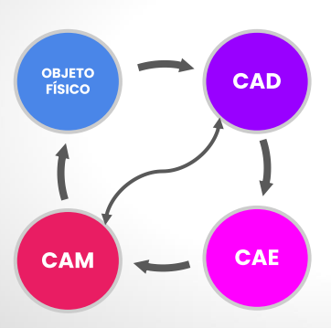
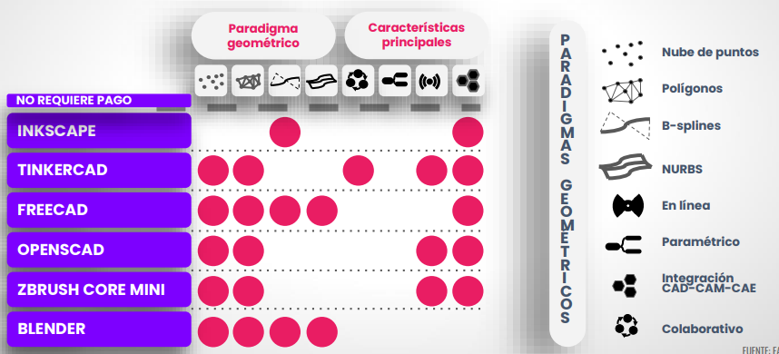
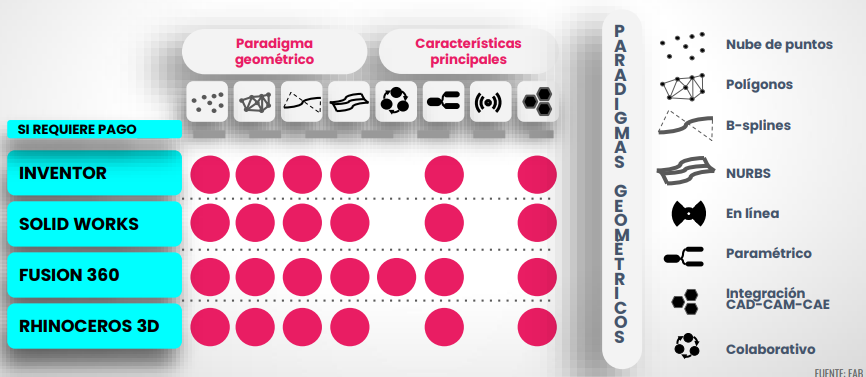
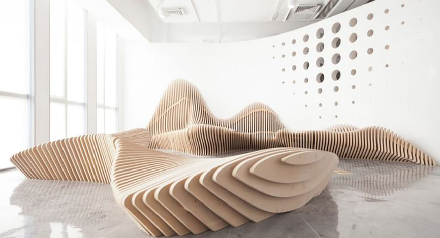
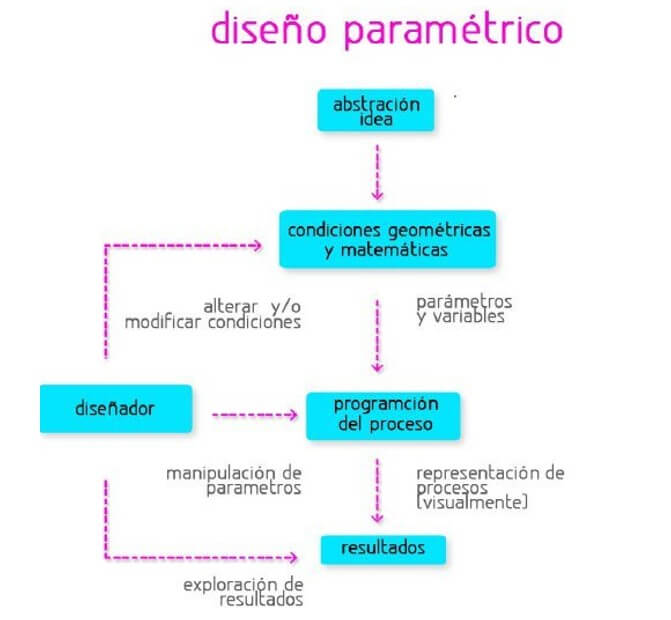
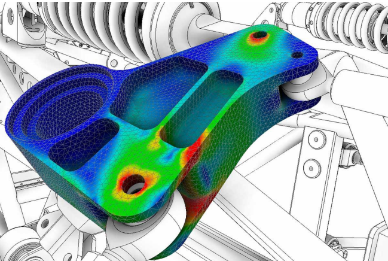
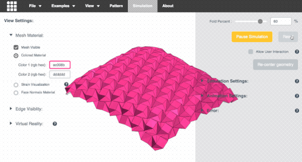
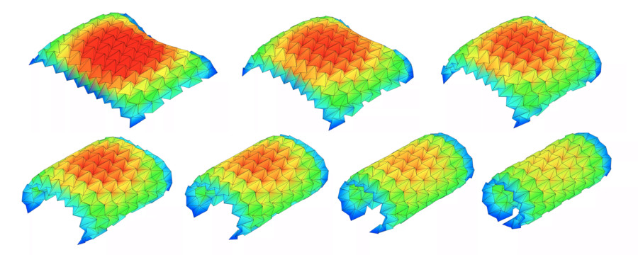
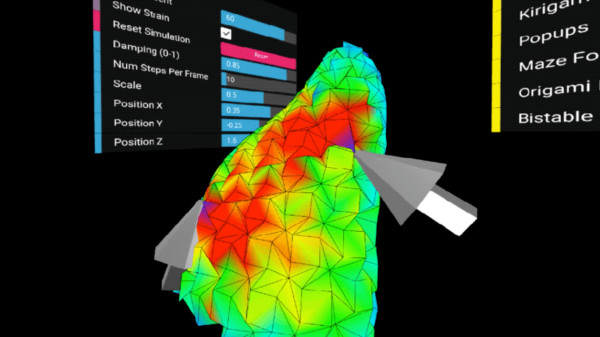

El video que vimos sobre el "Diseño Paramétrico: Tecnología y Revolución". Ejemplo que mencionado en el video fue del "puente tacoma". Link
Semana 8
FECHA
11/05/22
HORA
4:00-6:00 P.m
Comenzamos la clase hablando un poco de teoría sobre el entorno 3D.
Flujo de diseño y fabricación digital
Es de forma ciclica.
CAD
Diseño asistido a computador.
CAE
Ingeniería asistido por computador.
CAM
Manufactura asistido por computador
Software gratuitos
Software de paga


Diseño paramétrico
¿Qué es?
Es un proceso de diseño basado en un esquema algorítmico que permite expresar parámetros y reglas que definen, codifican y aclaran la relación entre los requerimientos del diseño y el diseño resultante
Se utiliza rhinoceros para hacer la programacion
¿Cómo hacer un diseño paramétrico?


Beneficios
1)Diseñar un proceso y no resultado. 2)Posibilidad de relacionar variables o parámetros. 3)Fabricación digital. 4)Programación de diseño.
VIDEO
Origami Simulator
Te permite simular cómo se doblará cualquier patrón de pliegue de origami. En lugar de doblar papel en un conjunto de pasos secuenciales, esta simulación intenta doblar cada pliegue simultáneamente. Lo hace resolviendo iterativamente pequeños desplazamientos en la geometría de una hoja inicialmente plana debido a las fuerzas ejercidas por los pliegues.
Instrucciones

1)Comenzando la clase la profesora Silvana creo una sala en TINKERCAR para poder crear nuestro prototipo 3D de nuestro proyecto. 2)Arrastre para rotar el modelo, desplácese para hacer zoom. 3)Importe otros patrones en el menú Ejemplos. 4)Cargue sus propios patrones de pliegue en formatos SVG o FOLD , siguiendo estas instrucciones .
Exporte archivos FOLD o modelos 3D (STL u OBJ) del estado plegado de su diseño ( Archivo > Guardar simulación como... ).
Visualice la tensión interna del origami a medida que se pliega utilizando la Visualización de tensión en el menú de la izquierda de las Opciones avanzadas .
 